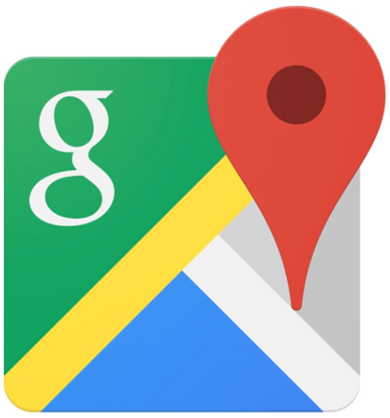

<ion-header>
  <ion-toolbar>
    <ion-title>
      설정
    </ion-title>
  </ion-toolbar>
</ion-header>

<ion-content>

  <ion-list style="margin-top: 30px;">
    <ion-list-header style="color:grey">
      현재위치를 기준으로 하여<br>
    가까운 영외마트를 찾는 어플리케이션입니다.<br>
    </ion-list-header>
    <br>

    <ion-item>
      <ion-label style="color: green;font-size: 13px;" >{{lb_file}}</ion-label>
    </ion-item>
  </ion-list>
  <ion-list style="margin-top: 30px;" id="rd_button" >
    <ion-radio-group [(ngModel)]="radioValue" (ionSelect)="rd_Change()">
      <ion-list-header>
        <ion-label style="color: grey;">길찾기 연동 선택</ion-label>
      </ion-list-header>
  
      <ion-item>
        <!-- </img> -->
        <ion-label>google map</ion-label>
        <ion-radio slot="start" value="1"></ion-radio>
      </ion-item>
  
      <ion-item>
        <ion-label>T map</ion-label>
        <ion-radio slot="start" value="2"></ion-radio>
      </ion-item>
  
      <ion-item>
        <ion-label>kakao map</ion-label>
        <ion-radio slot="start" value="3"></ion-radio>
      </ion-item>
    </ion-radio-group>

    
      <ion-button expand="full" color="medium" style="margin-top: 40px;height:55px" (click)="goGook()">국군복지포탈가기</ion-button>
    
  </ion-list>
</ion-content>
